Free and open source · Windows and Linux · What's new in the latest version
Your phone is the webcam.
Nothing to install on the phone. Scan a QR code on your PC, tap Start, and a camera called OmniCam shows up in Discord, Zoom, Google Meet and OBS, with the phone's microphone too if you want it.
Linux: AppImage · .rpm for Fedora · .deb for Ubuntu and Debian
Also .rpm for Fedora · .deb for Ubuntu and Debian · Windows installer
Windows may ask you to confirm once. Why?
The camera needs one kernel module; OmniCam installs it on Fedora, Debian and Ubuntu. Linux setup
OmniCam runs on Windows and Linux. macOS is on the roadmap.
OmniCam runs on your PC, and this phone becomes its camera. Open this page on your Windows or Linux PC to download it.
The demo didn't load. Reload the page to try again.
downloads, all versions stars forks Launch thread on r/software: 114K views, 280 upvotes, 150 comments (Nov 2026)
Scan, tap, live.
About thirty seconds the first time. After that the phone only scans the code.
-
1Scan
Open OmniCam on your PC and it shows a QR code. Point the phone's camera at it and open the link.
Phone and PC on the same Wi-Fi, or the PC joined to the phone's hotspot. The link only works from your network, and changes every time you make a new one.
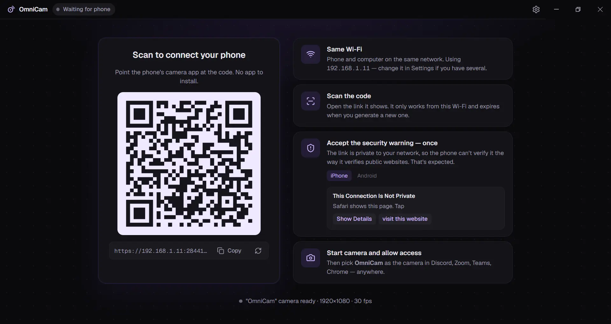
-
2Tap
The page opens in Safari or Chrome. Tap Start camera and allow the camera. The first time on each network, the browser warns you before that.
Browsers only give a page the camera over HTTPS, and a certificate for a private address like
192.168.1.11can't come from a public authority, so OmniCam makes its own. Your phone is talking straight to your PC. Accepting applies to that address on that network only, once per phone.iPhone: tap Show Details, then visit this website at the bottom.
Android: tap Advanced, then Proceed to 192.168…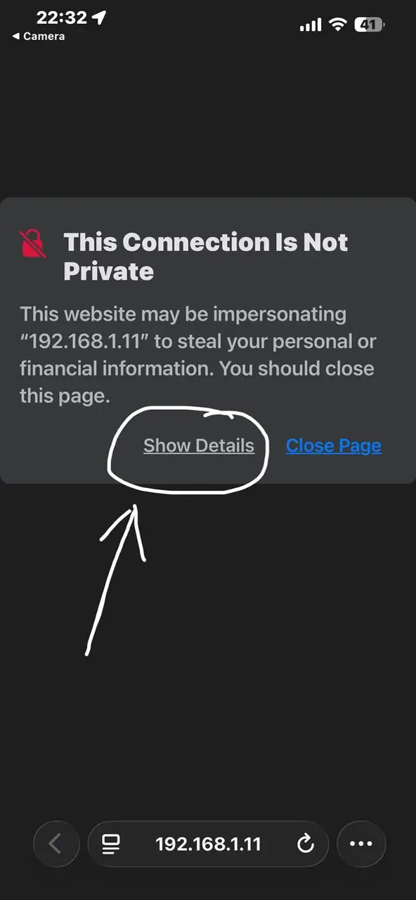
Tap Show Details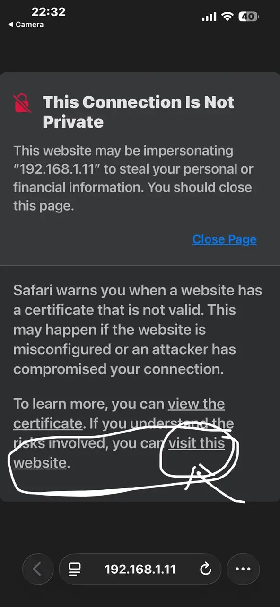
Tap visit this website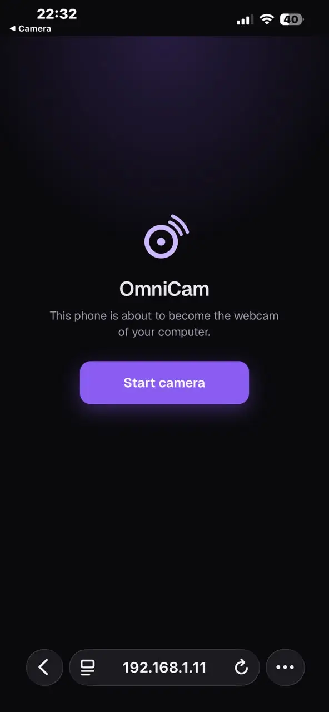
Tap Start camera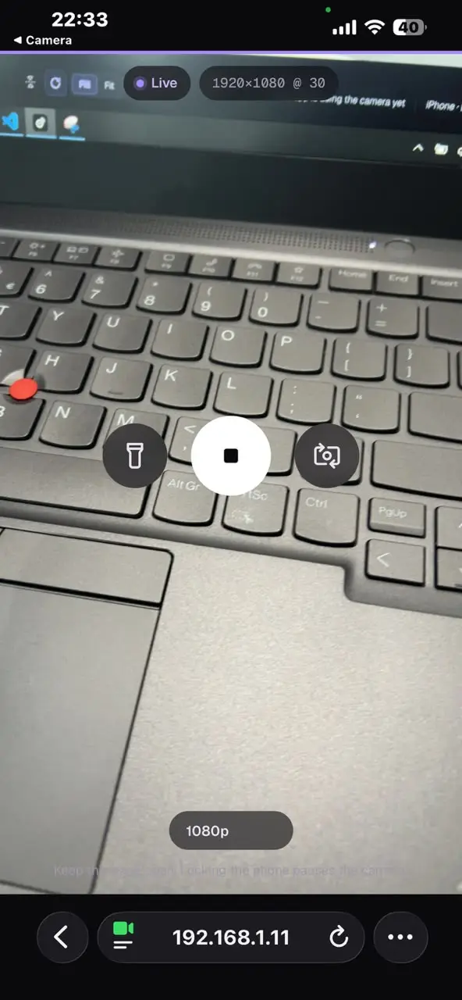
You're live
-
3Live
Pick OmniCam as the camera in Discord, Zoom, Google Meet, Teams (classic), Chrome, Firefox, OBS or Slack. Restart an app that was already open: apps list cameras when they start.
The window shows exactly what apps receive, with the resolution and frame rate they get.
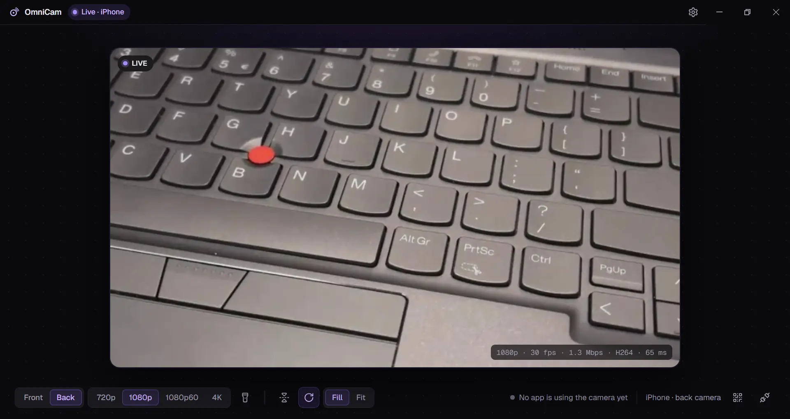


What it does, exactly.
OmniCam latest
- Capture
- 720p · 720p60 · 1080p · 4K from the phone's camera. 60 fps is 720p, the only 60 fps mode phone browsers offer.
- Output
- 720p · 1080p · 4K at 30 or 60 fps, landscape or portrait 9:16 (1080×1920). Discord, Zoom and Teams send at most 1080p; 4K is for OBS and recording.
- Encoder
- The phone's hardware H.264.
- Zoom
- 0.5× · 1× · 2× · 3×, as far as the phone's camera goes. On an iPhone's back camera 0.5× switches to the ultra-wide lens.
- Controls
- Front or back camera, torch, mirror, rotate, Fill or Fit, from the PC or the phone. On the front camera the torch turns the phone's screen white.
- Picture
- Brightness, contrast, saturation and warmth, adjusted on the PC, so they work the same with every phone.
- Connection
- Peer-to-peer WebRTC on your own network, no relay servers. When WebRTC can't connect, as with an iPhone as the hotspot, Hotspot mode uses the page's own encrypted connection (on an iPhone, iOS 16.4 or newer).
- Microphone
- Camera and microphone, or microphone only. Built in on Linux; through VB-CABLE on Windows.
- PC load
- About a quarter of a CPU core at 1080p.
- Idle
- The phone drops to 5 fps when no app is using the camera and the window is hidden.
- Phone
- iPhone (Safari) or Android (Chrome). Nothing to install.
- PC
- Windows 10 (1809 or newer) and 11, 64-bit. Linux x64 as an AppImage, rpm or deb.
- License
- MIT. Free, no account, no ads.
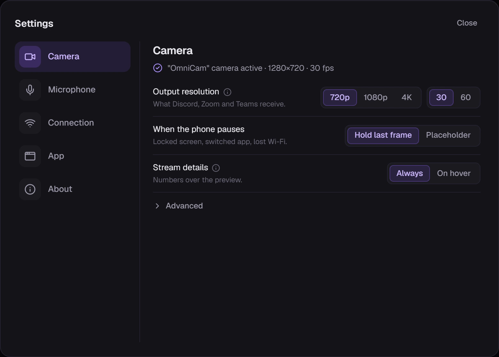
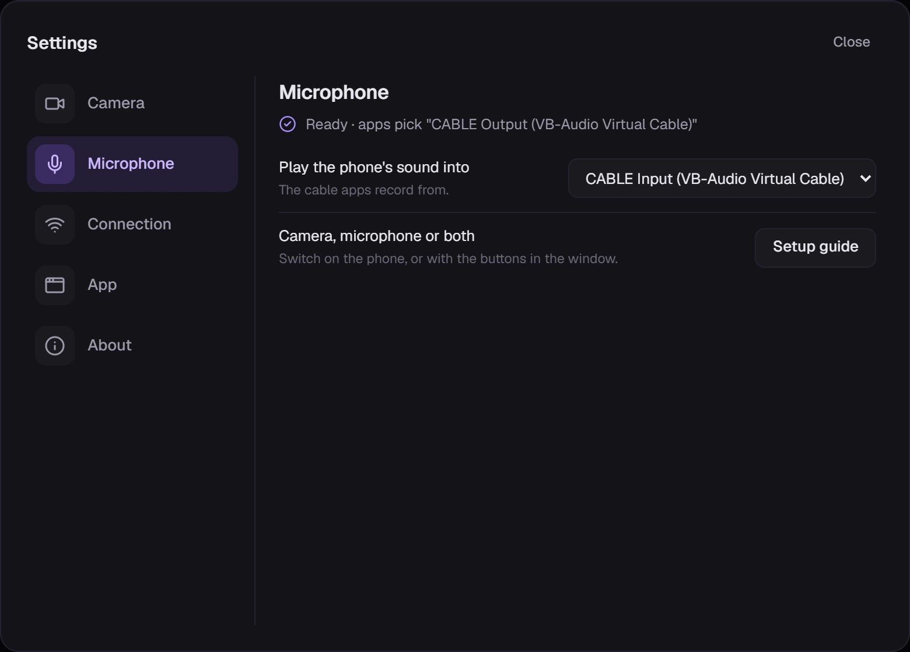
The phone is your microphone too.
Pick Camera + microphone or Microphone only before tapping Start, and switch any time from the phone or the PC, without reconnecting.
- Phone mic
- OmniCam
- VB-CABLE WindowsOmniCam Microphone Linux
- Your app
- Sent raw, like a USB mic. Your call app's noise suppression and echo cancellation do the rest.
- Microphone only keeps the camera off: far lighter on the phone's battery, and nothing to decode on the PC.
- It stays on your network like the video, and never plays on your speakers.
- On Windows it needs VB-CABLE, a free virtual audio cable from VB-Audio, because Windows only lets a signed driver add a microphone. Settings → Microphone → Set up walks through it and ticks each step off.
- On Linux there is nothing to install: while OmniCam runs, apps get a microphone called OmniCam Microphone.
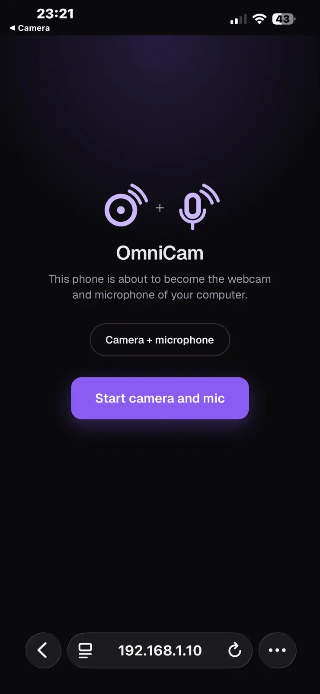
Camera + microphone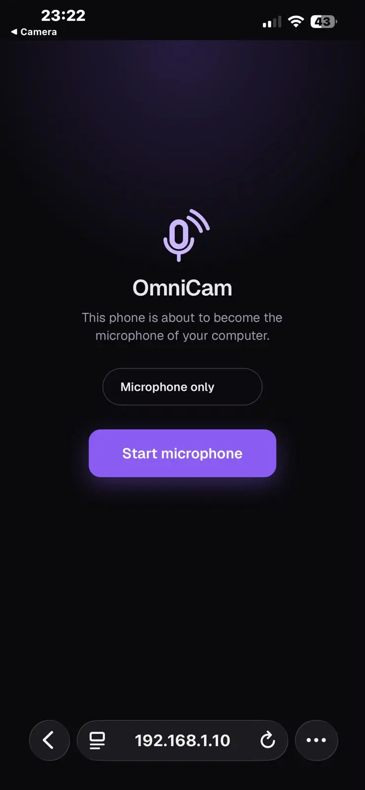
Microphone only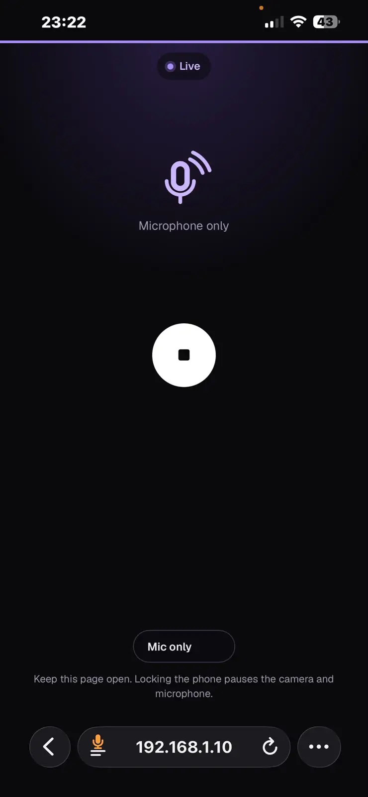
Live, camera off
On Linux too.
The same phone page and picture, a camera OmniCam sets up itself, and a microphone with nothing to install.
- The camera is a v4l2loopback device, the standard virtual camera on Linux. On Fedora, Debian and Ubuntu, click Install camera driver and enter your password once; OmniCam lists what it will do, then installs the module and sets up the camera. On Arch and others it shows the commands.
- Secure Boot: OmniCam asks it to trust the driver's key and shows a one-time password for the blue screen at the next restart. No BIOS change.
- The microphone, OmniCam Microphone, appears while OmniCam runs, made with PipeWire or PulseAudio, no root.
- Tested end to end on Fedora 44 (GNOME, Wayland). Ubuntu, Debian, Mint, Pop!_OS and Arch are supported, not tested yet. Say how it went.
What it asks for, what it sends, what it can't do.
OmniCam asks for administrator rights and opens a port on your network. Here is exactly what it does with them, and where it falls short.
Asks for
- Administrator rights, once, on Windows. The installer registers the OmniCam camera (a DirectShow filter, 64- and 32-bit) and adds one Windows Firewall rule so your phone can reach it. Both are listed on the installer's first page and removed when you uninstall. Nothing else runs as administrator.
- Your password, once, on Linux, to install the camera driver if it's missing (on Fedora that also turns on the RPM Fusion free repository) and to set up the camera, which writes two small config files that are removed with the package. The microphone needs no root.
- A click past SmartScreen. Installers aren't code-signed yet, so Windows asks you to confirm: More info → Run anyway. Free signing by SignPath Foundation is being set up. Code signing policy
Sends
- Phone ↔ PC, on your network: the pairing page, the encrypted video, and the microphone's sound if you turn it on. No relay servers. Hotspot mode uses the page's own encrypted connection, still straight from phone to PC.
- PC → GitHub: a daily update check you can turn off in Settings. Updates download only when you click.
- Nothing else. No account, no telemetry, no analytics, no crash reports. Privacy details
- Where the installer comes from: every installer and package is built by the project's public CI from the tagged source, with a signed build attestation, and published on GitHub Releases. The code is scanned by CodeQL. This site hosts no downloads of its own.
Can't do yet
- A microphone of its own on Windows. That needs a signed audio driver, so the sound goes through VB-CABLE for now. It's on the roadmap; Linux has one already.
- macOS. Windows 10 and 11 and Linux, 64-bit. macOS is on the roadmap.
- The newer Windows camera stack. The Windows Camera app and the new Microsoft Teams won't list OmniCam; apps that use DirectShow do.
- Linux without a kernel module. The camera needs v4l2loopback, and with Secure Boot a key enrolled once.
- Two phones at once, or a locked phone. The page must stay open with the screen on, so long calls want a charger.
- USB. Wi-Fi, or a hotspot with the PC joined to it. Hotspot mode costs more CPU and battery than Wi-Fi.
- Skip the browser warning. Once per phone and network, until a mode with a real certificate lands.
Questions
Something else? Open an issue.
Is it really free?
Yes. MIT license, no paid tier, no account, no ads. If it helps you, a star on GitHub or a bug report is the best thanks.
The phone can't open the page
Phone and PC must be on the same network: the same Wi-Fi (not a guest network or mobile data), or the PC joined to the phone's hotspot. Some routers isolate Wi-Fi devices from each other; use another network or a phone hotspot. With VPNs or virtual adapters, pick your Wi-Fi under Settings → Connection → Network. On Linux, Settings → Connection also shows the firewall command for your port.
Does it work with an iPhone as the hotspot?
Yes, since version 2.4.0. Safari won't use WebRTC there, so OmniCam sends the video and sound over the page's own encrypted connection instead, and the bar says Hotspot mode. It takes more CPU and battery than regular Wi-Fi, and needs iOS 16.4 or newer.
"OmniCam" doesn't show up in my app
Restart the app; apps list cameras when they start. If it's still missing, run the installer again to re-register the camera. The Windows Camera app and the new Microsoft Teams don't list it. On Linux, OmniCam's own window says what is missing and how to fix it; apps installed from Flathub need device access.
How do I use my phone as a microphone?
Install VB-CABLE (free) and restart. On the phone pick Camera + microphone or Microphone only, then choose CABLE Output as the microphone in Discord, Zoom or Teams. Settings → Microphone → Set up in OmniCam walks through it and ticks each step off as you go. On Linux skip VB-CABLE: choose OmniCam Microphone.
Why does the microphone need VB-CABLE?
Call apps only list microphones that come from an audio driver, and Windows only loads drivers Microsoft has signed. VB-CABLE is a free, signed virtual cable: OmniCam plays the phone's sound into one end and your app records from the other. The camera needs nothing like it, because Windows lets an app add a camera without a driver. Linux lets an app add a microphone without a driver, so there OmniCam makes its own.
Does any video or sound go through the internet?
No. Video and sound go from your phone to your PC on your local network: peer-to-peer WebRTC, or in Hotspot mode the page's own encrypted connection. There are no relay servers.
How was it built?
By one developer, with AI assistance for parts of the implementation, documentation and testing. The README says where it helped and where it didn't, and the architecture notes explain every design decision.